Per il corso di Interaction Design il gruppo di lavoro composto da Roberta, Giovanna e Carolina, a seguito dell’invito proposto dalla professoressa Paola Berardi ha realizzato di una app contro lo spreco alimentare.
Foodie
 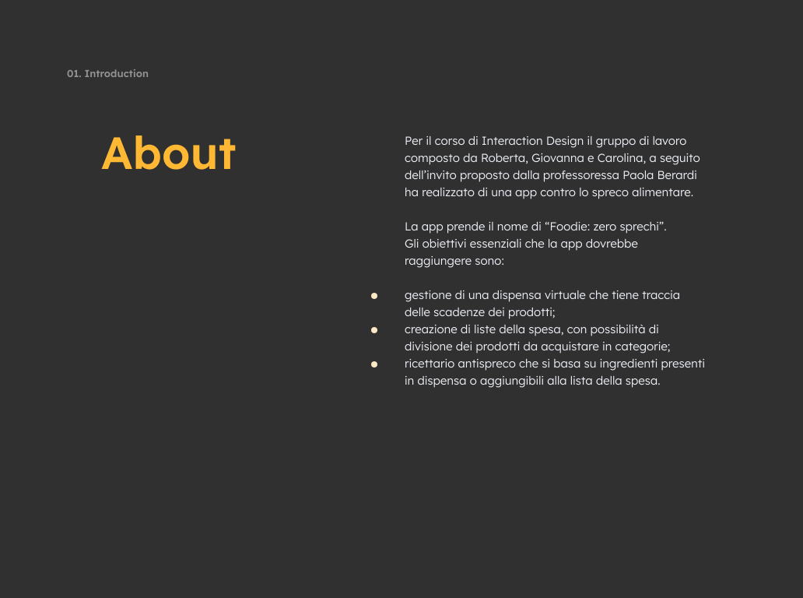
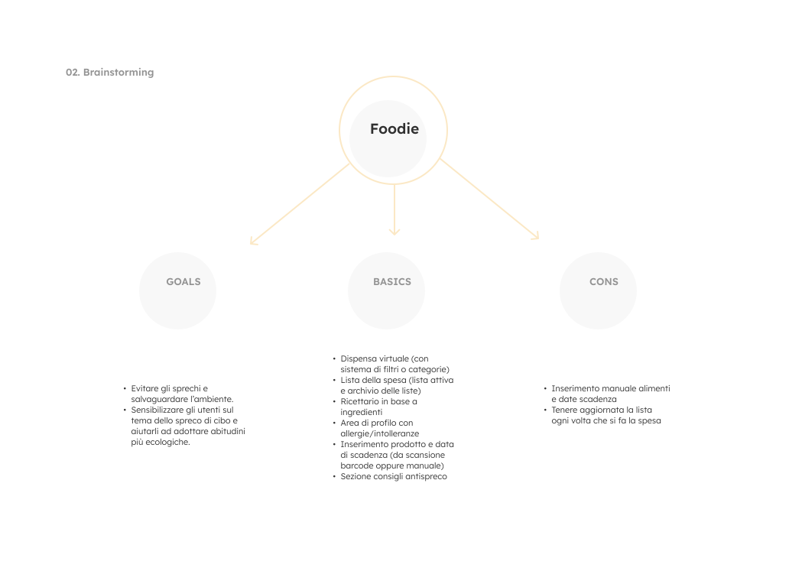
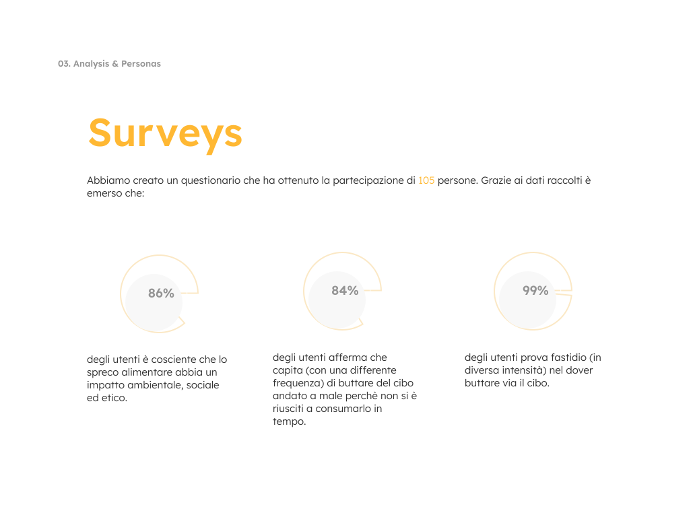
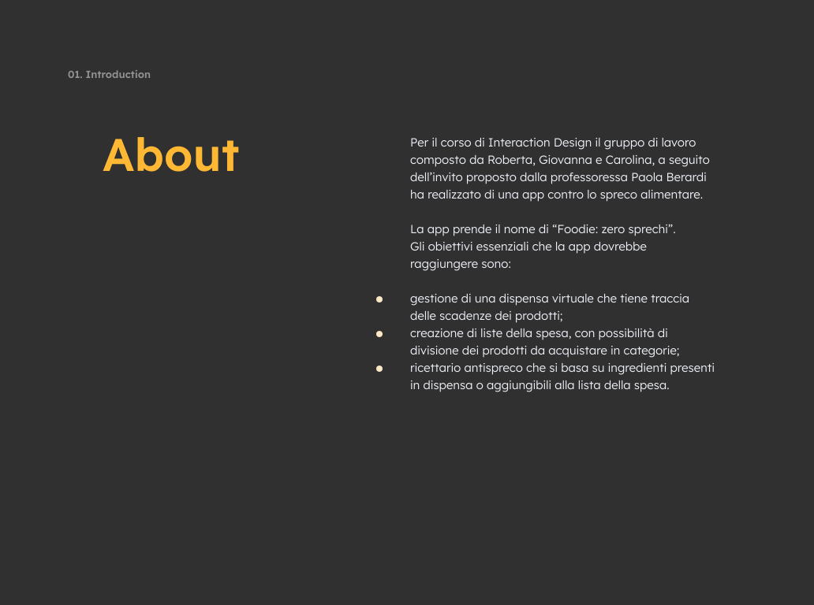
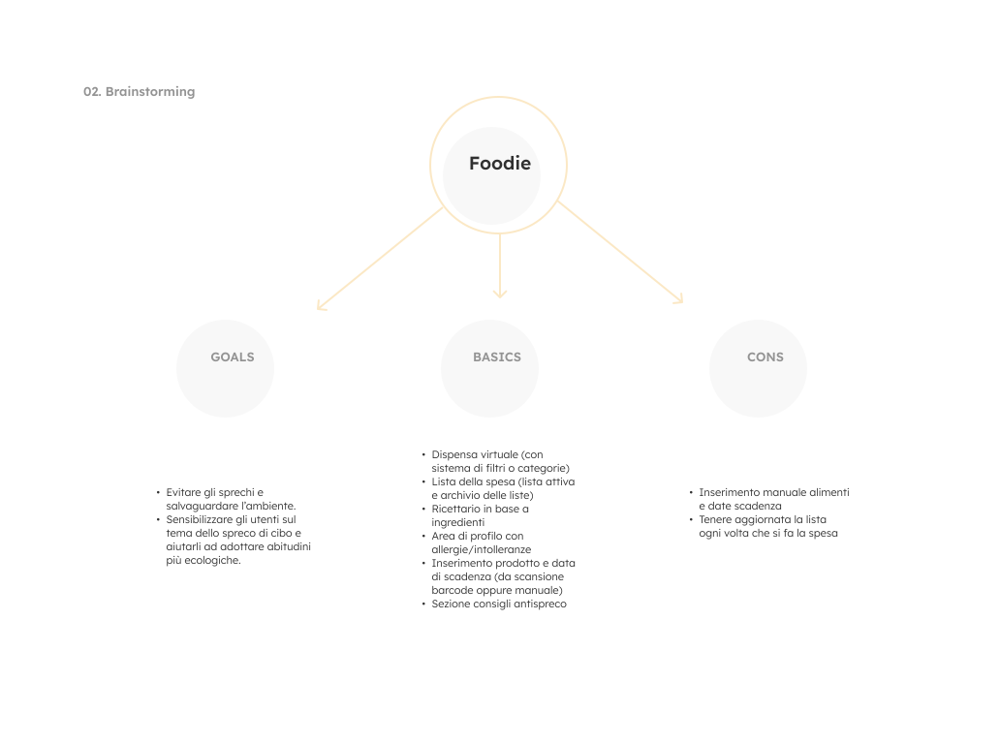
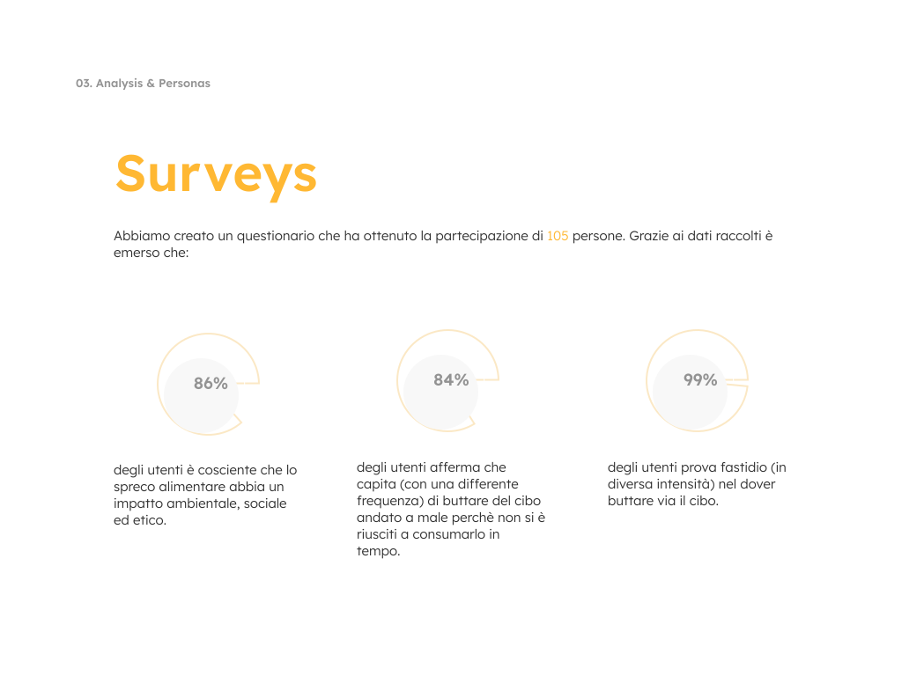
 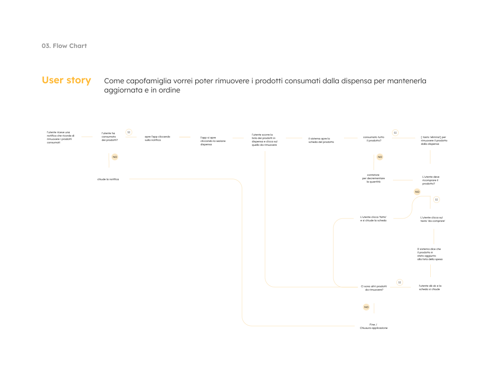
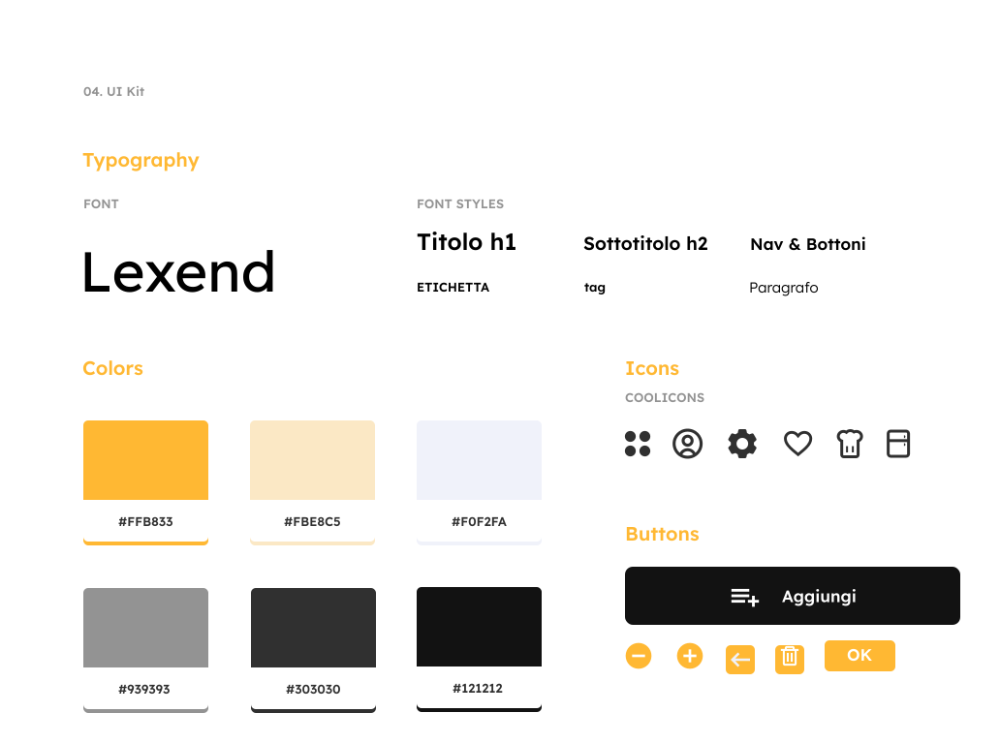
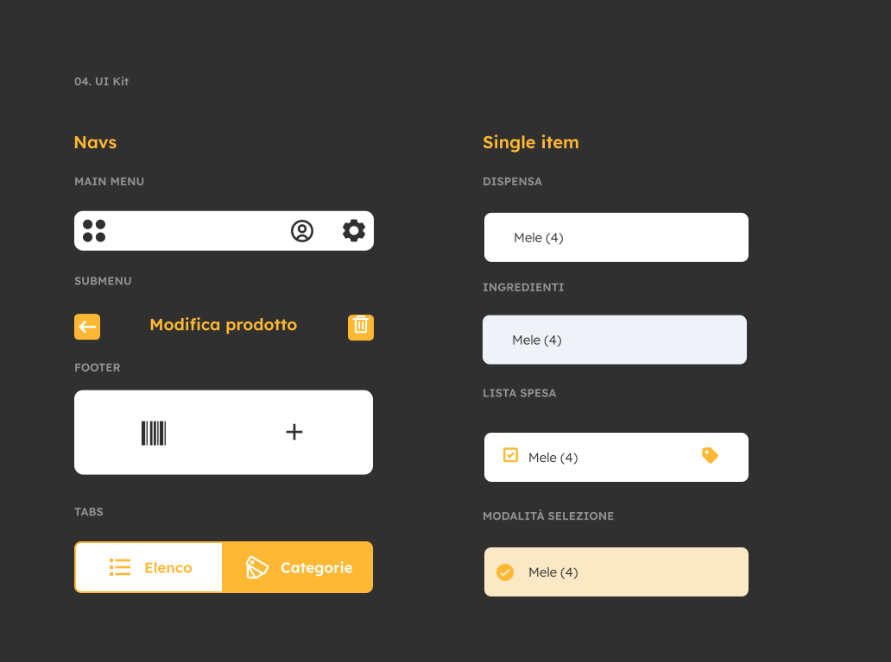
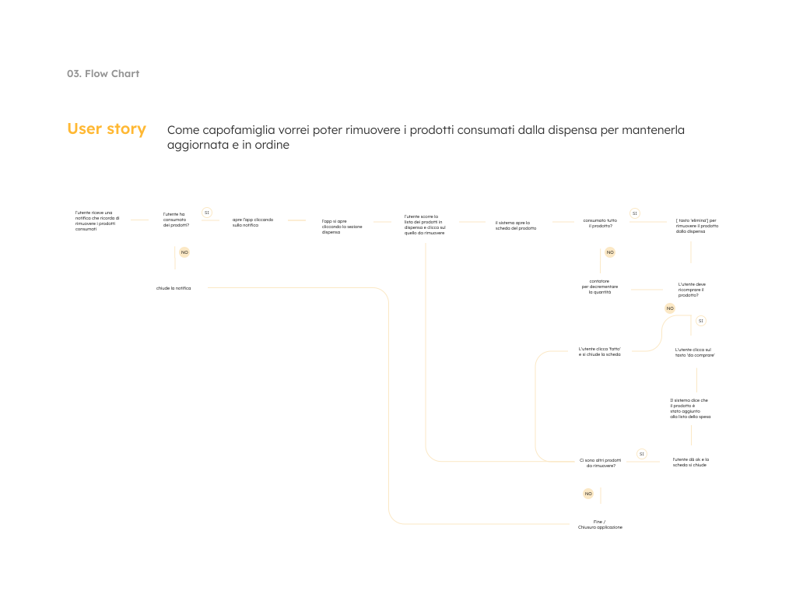
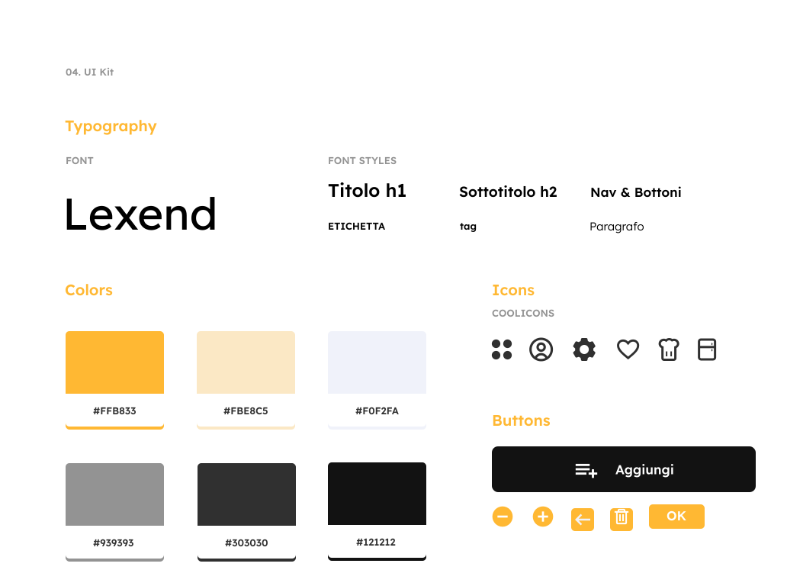
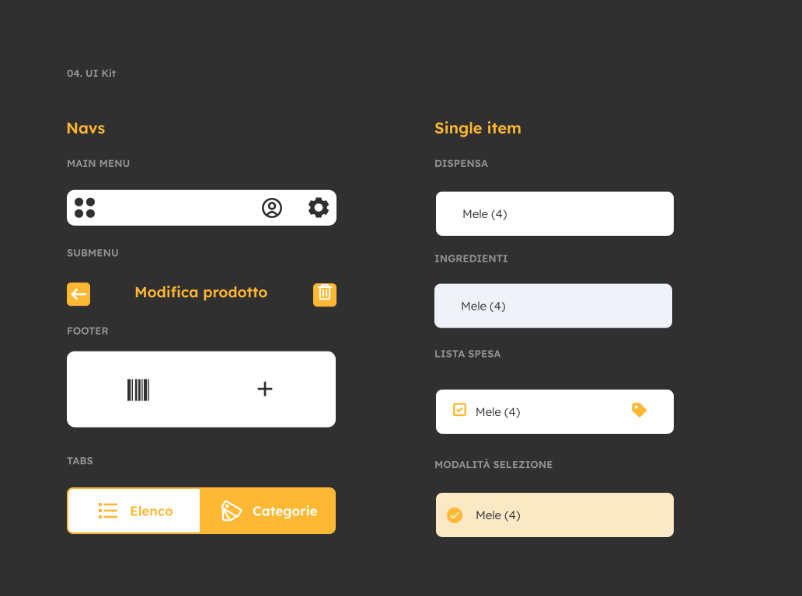